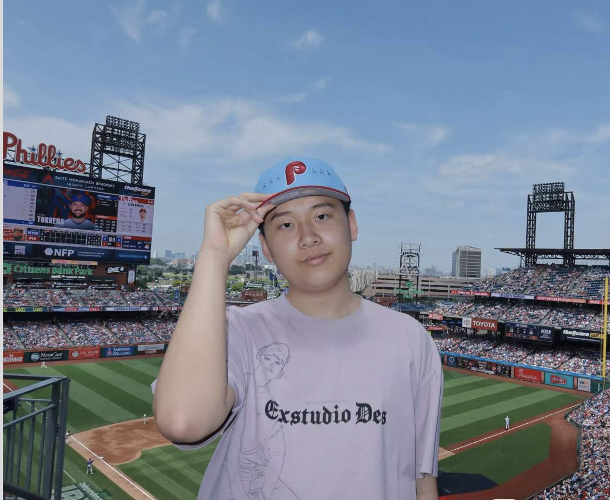

Science & health
I’m curious about how discoveries in biology and medicine can respond to problems people face every day.
WLSA Shanghai Academy · Student
I’m Jerry, a high school student exploring how science can improve health and how stories help people understand one another. My work moves between the lab, the stage, and the screen.

01 / About
I like questions that do not belong to just one subject.
As a student at WLSA Shanghai Academy, I’m drawn to the space between disciplines: the point where biomedical research meets real health challenges, and where a performance or film can make an idea feel human.
I enjoy working with others, asking better questions, developing new ideas, and turning them into meaningful projects.
02 / What I explore
I’m curious about how discoveries in biology and medicine can respond to problems people face every day.
Through lab work and iGEM, I’ve learned to test ideas carefully, document results, and build with a team.
Acting, filmmaking, and writing help me explore perspective, emotion, and the stories people carry.